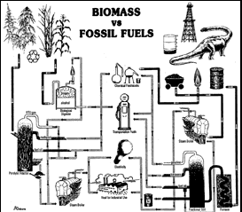

|  |
| |
Fuel is not synonymous with petroleum and coal. Biomass energy systems can supply a sustainable source of fuel and will create millions of new clean jobs. Hemp biomass derived fuels can replace every type of fossil fuel energy product. (see chart.)

During transpiration, the growing hemp plants “breathe in” CO2 (carbon dioxide) to build cell structure; the left over oxygen is breathed out replenishing Earth’s air supply. Then when the carbon rich hemp biomass is burned for energy the CO2 is released back into the air. The CO2 cycle comes close to ecological balance when the new fuel crop is grown the next year. Growing trees keeps 10 times the carbon dioxide in the Earth by keeping the infrastructure of the microbes, insects, plants, fungi, etc. alive for each tree. The older and bigger the tree, the more cabon dioxide is kept out of the atmosphere.
(Not all of the biomass crop gets converted into fuels. Some leaves, stalk stubble, and all of the roots remain in the field as crop residues. This carbon rich organic matter adds to the soil fertility, and with each passing season a little more carbon dioxide from the air enters the soil, so the biomass fuel crop slowly reduce the amount of carbon dioxide from our polluted atmosphere.)
Farming only 6% of the continental U.S. with biomass would provide all of America’s oil and gas energy needs, thus ending our dependence on fossil fuels. Hemp is the number one net biomass source on Earth: capable of producing 10 tons per acre in four months.
Biomass conversion through pyrolysis (applying high heat to organic material in the absence of air or in reduced air) produces clean burning charcoal to replace coal.
Sulfur emitted from coal-fired boiler smokestacks is the primary cause of acid rain. Measuring acidity on the pH scale, the rainfall in New England often falls between household vinegar and lemon juice. This is bad for every cell membrane it contacts, doing the most harm to the simplest life forms. Charcoal contains no sulfur, so when it is burned for industry no sulfur is emitted from the process.
The biomass “cracking” process also produces non-sulfur fuel oils capable of replacing fossil fuel oils such as diesel oil. And the net atmospheric CO2 doesn’t rise when biomass derived fuel oils are burned.
Pyrolysis uses the same “cracking” technology employed by the petroleum industry in processing fossil fuels. The gasses that remain after the charcoal and fuel oils are extracted from hemp can be used for driving electric power co-generators, too!
This biomass conversion process can be adjusted to produce charcoal, methanol, and fuel oils to process steam, as well as chemicals important to industry: acetone, ethyl acetate, tar, pitch, and creosote.
The Ford Motor Co. successfully operated a biomass “cracking” plant in the 1930s at Iron Mountain, Michigan, using trees for cellulose fuels. (Earth-friendly hemp is at least four times as efficient as trees for fuel, and is sustainable.)
“Progress in Biomass Conversion” Vol. 1, Sarkanen & Tillman, editors; Energy Farming in America, Osburn, Lynn, Access Unlimited, 1989.
Hempseed contains 30% (by volume) oil. This oil has been used to make high-grade diesel fuel oil and aircraft engine and precision machine oil. Throughout history, hempseed oil was used for lighting in oil lamps. Legend says the genie’s lamp burned hempseed oil, as did Abraham the prophet’s. In Abraham Lincoln’s time only whale oil came near hempseed oil in popularity for fuel.
the authorized on-line version of Jack Herer’s “The Emperor Wears No Clothes”
| previous page | Chapter 9 | next page |
|
 |
 |
 |
 |